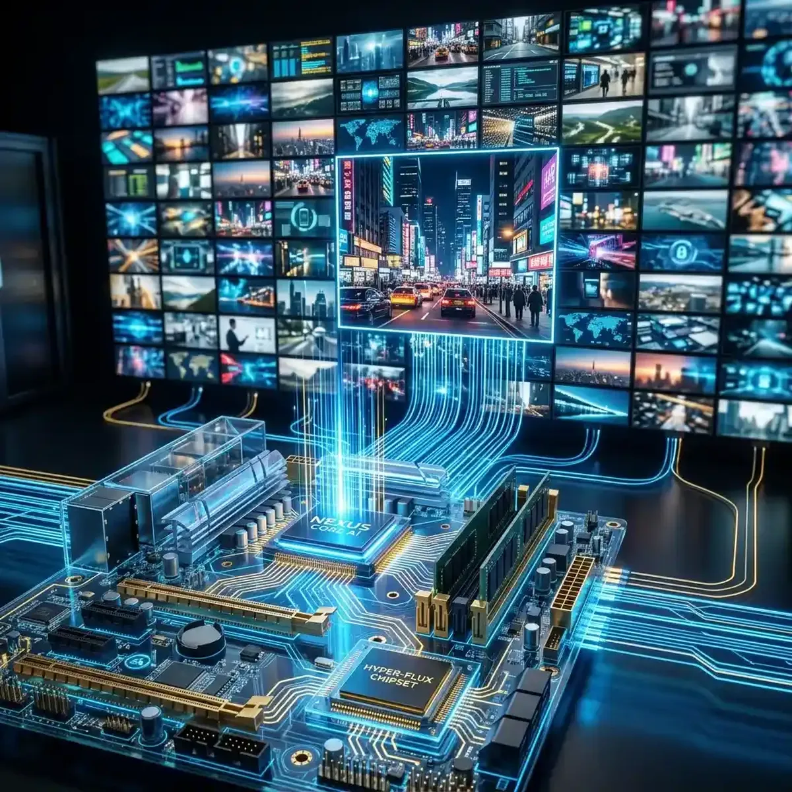

The Ultimate Performance Guide: Playing 100 Videos Without Lag

In today's fast-paced digital landscape, the ability to render 100 simultaneous video streams has transitioned from a theoretical possibility to a professional requirement for intelligence-driven operations.
However, achieving this level of visual density without crashing your browser or melting your hardware is an engineering challenge of the highest order. The "Performance Gap"—the difference between a stuttering, laggy interface and a smooth, synchronized dashboard—is where critical information can be lost. To achieve total multitasking efficiency, you must move beyond the "Default Settings" and into the realm of "High-Performance System Architecture." This guide explores the technical science of resource management and examines how you can build a stable 100-video grid ecosystem that remains zero-stutter in the most demanding environments. Success in 2026 is about the scalability of your intelligence infrastructure. Total multitasking efficiency is the byproduct of pure technical stability.
Resource Management (CPU, GPU, and RAM): The Triad of Stability
To understand performance, you must understand the "Triad of Stability"—the balance between your CPU (Central Processing Unit), GPU (Graphics Processing Unit), and RAM (Random Access Memory). Today, rendering a 100-video grid isn't just a memory problem; it’s a "Decoding and Rendering" problem. Every video stream requires a dedicated "Media Pipeline" that must be decoded in real-time. If your CPU becomes overwhelmed by these background tasks, your entire system will experience "UI Stuttering" and "Input Latency."
For a professional grid (monitored with high-performance tools like YoutubeMulti), "Hardware Offloading" is the key. The browser engine must be able to shift the heavy decoding tasks away from the CPU and onto the GPU. Modern Graphics Cards are designed for high-density parallel processing, making them the perfect engine for rendering dozens of video tiles simultaneously. Additionally, ensuring you have enough "VRAM" (Video RAM) to hold the decoded frames for every active stream is critical for preventing "Memory Thrashing." High-performance monitoring requires high-performance hardware architecture. Total multitasking efficiency is a byproduct of focused, hardware-aware design.
Browser Engine Optimization: Offloading the Heavy Decoding Tasks
Even with powerful hardware, a poorly optimized browser engine can still destroy your performance. Today, "Native Optimization" is the standard. The browser must be able to manage the "Media Buffers" for 100 streams without creating "Garbage Collection" spikes that cause intermittent freezes. This involves utilizing advanced Web APIs that support multi-threaded video decoding and high-efficiency "Tile Rendering." If your browser is struggling, your intelligence will be delayed.
To optimize your engine, ensure you are using a browser based on the latest high-performance Chromium core. This engine has been specifically designed for multi-stream stability and provides the "Hardware Acceleration Filters" needed to keep your grid in the "Zero-Stutter Zone." Tools like YoutubeMulti utilize these native optimizations to ensure that your 100-video grid remains synchronized and responsive, even when you are monitoring high-velocity events in real-time. By reducing the mental effort required to recalibrate your eyes for "stuttering frames," you protect your focus for higher-level decision-making. Engine optimization is the second pillar of stability. Clarity of the stream is clarity of the mind.
The Role of 'Focus Tiling' in Performance Balancing
One of the most effective strategies for maintaining high-performance stability in a 100-video grid is "Focus Tiling." This involves intelligently allocating more system resources to your "Primary Tiles"—those you are currently looking at—while reducing the quality or refresh rate of "Secondary Tiles" in your periphery. Today, this "Adaptive Rendering" is handled automatically by professional monitoring software. It ensures that the video you are actively analyzing is always in high-definition and zero-latency, while the 90 other tiles provide "Ambient Awareness" with minimal system load.
To support this, your grid architecture should be modular. Place your high-priority news portals and technical analysis (TA) streams in the "Focus Zone" (the center of your dashboard). These tiles should be configured for the highest possible bitrate and lowest latency. The remaining tiles—monitoring hashtags, social sentiment, or slow-burn news—can be placed in the "Ambient Zone" with optimized performance settings. This "Strategic Resource Allocation" is how a 100-video grid can run on a high-spec consumer laptop without compromise. YoutubeMulti provides the "Visual Control Board" needed to manage this balance in real-time. Design your grid for focus, and your performance will follow.
Scalable Architecture: Preparing Your Setup for 200+ Streams
As we move toward 2027, the limits of the single-machine dashboard are being challenged. "Scalable Architecture" involves moving toward multi-machine or cloud-based rendering for ultra-high-density monitoring (200+ streams). This involves having multiple "Edge Computers" dedicated to decoding and a central "Dashboard Master" that synchronizes the visuals across 20-30 separate monitors. This is the "Video Wall" approach used by institutional-grade intelligence agencies and high-velocity trading floors.
For the professional analyst, building a scalable architecture means ensuring your software (like YoutubeMulti Pro) supports "Cross-Device Synchronization." Imagine being able to control a massive video wall in your home-office from a single, unified interface. This level of multiscreen integration allows you to expand your "Intelligence Net" without overwhelming a single point of failure. The future of multitasking efficiency isn't just about more tiles; it’s about a more resilient, distributed visual ecosystem. Achieving total situational awareness is the only path to managing content efficiently. The era of total semantic awareness starts with a stable grid.
Future Outlook: AI-Optimized Resource Allocation and Cloud-Based Rendering
As we look toward 2027 and beyond, the future of high-performance monitoring is undeniably data-driven and reliable. We are moving toward a world of "AI Optimized Rendering," where your system will automatically detect the "Emotional Significance" or "Narrative Weight" of a stream and adjust its resources accordingly. Future dashboards will likely include built-in "Focus Heat-Maps," real-time "Network Optimization" overlays, and seamless integration with global reputation-integrity databases. YoutubeMulti is already providing the foundation for this high-tech future, allowing you to build your own bespoke "Strategic Intelligence Grid" today.
Using YoutubeMulti's Adaptive Engine to Monitor System Health in Real-Time
For the technical specialist, having efficient multitasking of their system performance is non-negotiable. Using YoutubeMulti to build an "Operations Control Center" allows you to:
- Tile 1-4: The Primary Focus: High-definition tiles in the central "Focal Zone" for immediate analysis.
- Tile 5-50: The Strategic Intelligence: Medium-resolution tiles for contextual background and deep sentiment analysis.
- Tile 51-100: The Ambient Radars: Optimized low-resource tiles for monitoring broad trends and slow-burn stories.
- Real-Time Performance Monitor: Use your dashboard to monitor your GPU load and frame-sync quality in real-time to identify any potential bottlenecks.
- Adaptive Sync Control: Resync all 100 streams with a single click if network jitter or hardware lag causes a drift in the grid.
Conclusion: Final Thoughts on the Performance Standard
The 2026 world of high-performance monitoring is a rewarding but demanding landscape of data, sentiment, and engineering. It is no longer enough to just "watch" content—you must "engineer" your reality. By utilizing advanced protocol optimization and professional tools like YoutubeMulti, you can ensure that you are always at the center of the intelligence curve. Don't just watch—focus, analyze, and build your productivity workflow in the multi-stream future. The era of total semantic awareness has arrived.